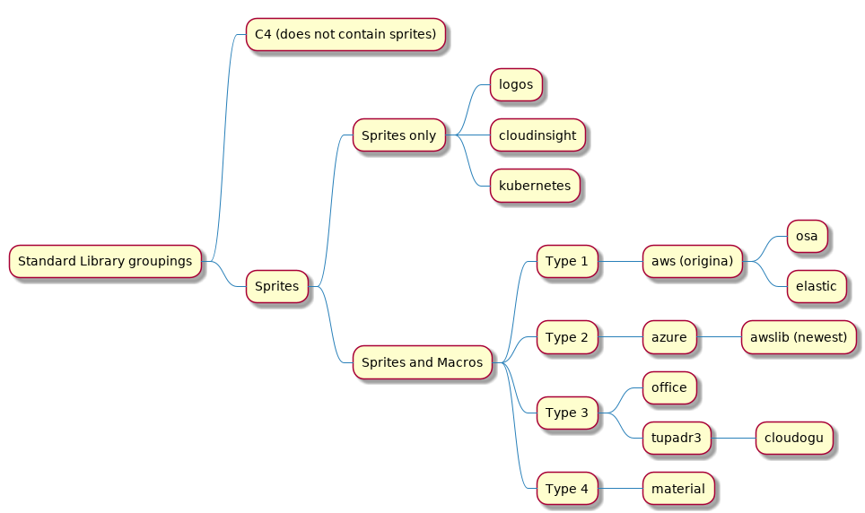

1. PlantUML Stdlib Overview¶
Tip
See GitHub File Finder for a handy hint on searching for icons.
1.1. PlantUML Standard Library Overview¶
This overview is at May 2020.
PlantUML Standard Library includes several icon libraries from different sources (including myself) and they are varied in functionality and how to use them.
The most recent addition is https://github.com/awslabs/aws-icons-for-plantuml.
https://github.com/awslabs/aws-icons-for-plantuml (Amazon) builds on the work of https://github.com/RicardoNiepel (MicroSoft):
https://github.com/RicardoNiepel/C4-PlantUML which builds on https://c4model.com/
These in turn build on
Note
There are now 2 AWS icon sets in PlantUML Stdlib:
The original one from 2018 with the older icon style: https://github.com/plantuml/plantuml-stdlib/blob/master/aws/INFO
The newer one from 2020 AWSlabs https://github.com/plantuml/plantuml-stdlib/blob/master/awslib/INFO that has the latest icons from AWS.
Broadly, the main groupings (based on macro definition) are per diagram. Osa and Elastic are based on aws.

PlantUML Stdlib Groupings Of Libraries Based On Similarity¶
1.1.1. Type 1 (e_type,e_color,e_sprite,label,alias,e_stereo)¶
AWS is one of the original stdlib entries - it’s from 2017. Some libraries, listed below, followed the same layout, or used the same tools to create the sprites.
https://github.com/plantuml/plantuml-stdlib/blob/master/aws/AI/AmazonLex/ contains 4 files:
AmazonLex-sprite.puml 68x72/16 sprite
AmazonLex.puml same as AmazonLex-sprite.puml but with macros
AmazonLex_LARGE-sprite.puml 340x360/16
AmazonLex_LARGE.puml same as AmazonLex_LARGE-sprite.puml but with macros
The macros look like:
:: code-block:
!define AMAZONLEX(alias) PUML_ENTITY(component,#2F74B8,AmazonLex,alias,AmazonLex)
!definelong AMAZONLEX(alias,label,e_type="component",e_color="#2F74B8",e_stereo="AmazonLex",e_sprite="AmazonLex")
PUML_ENTITY(e_type,e_color,e_sprite,label,alias,e_stereo)
!enddefinelong
1.1.1.1. osa¶
https://github.com/plantuml/plantuml-stdlib/blob/master/osa
:: code-block:
!define LEFT(alias) PUML_ENTITY(component,black,left,alias,left)
!definelong LEFT(alias,label,e_type="component",e_color="black",e_stereo="left",e_sprite="left")
PUML_ENTITY(e_type,e_color,e_sprite,label,alias,e_stereo)
!enddefinelong
1.1.1.2. elastic¶
https://github.com/plantuml/plantuml-stdlib/blob/master/osa
:: code-block:
!define APM(alias) PUML_ENTITY(agent,00BFB3,apm,alias,apm)
!definelong APM(alias,label,e_type="agent",e_color="00BFB3",e_stereo="apm",e_sprite="apm")
PUML_ENTITY(e_type,e_color,e_sprite,label,alias,e_stereo)
!enddefinelong
1.1.2. Type 2 (e_alias, e_label, e_techn, e_descr)¶
Below shows what the macros look like for each icon
1.1.2.1. azure¶
https://github.com/plantuml/plantuml-stdlib/blob/master/azure/AIMachineLearning/AzureBatchAI.puml
AzureEntityColoring(AzureBatchAI)
!define AzureBatchAI(e_alias, e_label, e_techn) AzureEntity(e_alias, e_label, e_techn, AZURE_SYMBOL_COLOR, AzureBatchAI, AzureBatchAI)
!define AzureBatchAI(e_alias, e_label, e_techn, e_descr) AzureEntity(e_alias, e_label, e_techn, e_descr, AZURE_SYMBOL_COLOR, AzureBatchAI, AzureBatchAI)
1.1.2.2. awslib¶
https://github.com/plantuml/plantuml-stdlib/blob/master/awslib/ARVR/ARVR.puml
AWSEntityColoring(ARVR)
!define ARVR(e_alias, e_label, e_techn) AWSEntity(e_alias, e_label, e_techn, #CC2264, ARVR, ARVR)
!define ARVR(e_alias, e_label, e_techn, e_descr) AWSEntity(e_alias, e_label, e_techn, e_descr, #CC2264, ARVR, ARVR)
!define ARVRParticipant(p_alias, p_label, p_techn) AWSParticipant(p_alias, p_label, p_techn, #CC2264, ARVR, ARVR)
!define ARVRParticipant(p_alias, p_label, p_techn, p_descr) AWSParticipant(p_alias, p_label, p_techn, p_descr, #CC2264, ARVR, ARVR)
The BatchParticipant part supports adding icons to sequence diagrams i.e.
!define BatchParticipant(p_alias, p_label, p_techn) AWSParticipant(p_alias, p_label, p_techn, #D86613, Batch, Batch)
![@startuml Sequence Diagram - Spots and stereotypes
'source from https://github.com/awslabs/aws-icons-for-plantuml
!define AWSPuml https://raw.githubusercontent.com/awslabs/aws-icons-for-plantuml/master/dist
!includeurl AWSPuml/AWSCommon.puml
!includeurl AWSPuml/Compute/all.puml
!includeurl AWSPuml/Mobile/APIGateway.puml
!includeurl AWSPuml/General/InternetGateway.puml
!includeurl AWSPuml/Database/DynamoDB.puml
actor User as user
APIGatewayParticipant(api, Credit Card System, All methods are POST)
LambdaParticipant(lambda,AuthorizeCard,)
DynamoDBParticipant(db, PaymentTransactions, sortkey=transaction_id+token)
InternetGatewayParticipant(processor, Authorizer, Returns status and token)
user -> api: Process transaction\nPOST /prod/process
api -> lambda: Invokes lambda with cardholder details
lambda -> processor: Submit via API token\ncard number, expiry, CID
processor -> processor: Validate and create token
processor -> lambda: Returns status code and token
lambda -> db: PUT transaction id, token
lambda -> api: Returns\nstatus code, transaction id
api -> user: Returns status code
@enduml](../_images/plantuml-1e6fa5171f818deaa1af432de6c4a2f2e86dd167.png)
Sequence diagram with icons¶
1.1.3. Type 3 (_alias, _label, _shape, _color)¶
1.1.3.1. office¶
https://github.com/plantuml/plantuml-stdlib/blob/master/office/Clouds/azure.puml
!define OFF_AZURE(_alias) ENTITY(rectangle,black,azure,_alias,OFF AZURE)
!define OFF_AZURE(_alias,_label) ENTITY(rectangle,black,azure,_label,_alias,OFF AZURE)
!define OFF_AZURE(_alias,_label,_shape) ENTITY(_shape,black,azure,_label,_alias,OFF AZURE)
!define OFF_AZURE(_alias,_label,_shape,_color) ENTITY(_shape,_color,azure,_label,_alias,OFF AZURE)
1.1.3.2. cloudogu¶
https://github.com/plantuml/plantuml-stdlib/blob/master/cloudogu/tools/ansible.puml
!define TOOL_ANSIBLE(_alias) ENTITY(rectangle,black,ansible,_alias,TOOL ANSIBLE)
!define TOOL_ANSIBLE(_alias, _label) ENTITY(rectangle,black,ansible,_label, _alias,TOOL ANSIBLE)
!define TOOL_ANSIBLE(_alias, _label, _shape) ENTITY(_shape,black,ansible,_label, _alias,TOOL ANSIBLE)
!define TOOL_ANSIBLE(_alias, _label, _shape, _color) ENTITY(_shape,_color,ansible,_label, _alias,TOOL ANSIBLE)
skinparam folderBackgroundColor<<TOOL ANSIBLE>> White
@enduml
1.1.3.3. tupadr3¶
https://github.com/plantuml/plantuml-stdlib/blob/master/tupadr3/devicons/android.puml
!define DEV_ANDROID(_alias) ENTITY(rectangle,black,android,_alias,DEV ANDROID)
!define DEV_ANDROID(_alias, _label) ENTITY(rectangle,black,android,_label, _alias,DEV ANDROID)
!define DEV_ANDROID(_alias, _label, _shape) ENTITY(_shape,black,android,_label, _alias,DEV ANDROID)
!define DEV_ANDROID(_alias, _label, _shape, _color) ENTITY(_shape,_color,android,_label, _alias,DEV ANDROID)
skinparam folderBackgroundColor<<DEV ANDROID>> White
@enduml
1.1.4. Type 4 (_color, _scale, _alias, _shape, _label)¶
1.1.4.1. material¶
https://github.com/plantuml/plantuml-stdlib/blob/master/material/access_point.
1153 files (not in categorised folders)
!define MA_ACCESS_POINT(_color) SPRITE_PUT( ma_access_point, _color)
!define MA_ACCESS_POINT(_color, _scale) SPRITE_PUT( ma_access_point, _color, _scale)
!define MA_ACCESS_POINT(_color, _scale, _alias) SPRITE_ENT( _alias, MA ACCESS_POINT, ma_access_point, _color, _scale)
!define MA_ACCESS_POINT(_color, _scale, _alias, _shape) SPRITE_ENT( _alias, MA ACCESS_POINT, ma_access_point, _color, _scale, _shape)
!define MA_ACCESS_POINT(_color, _scale, _alias, _shape, _label) SPRITE_ENT_L(_alias, MA ACCESS_POINT, _label, ma_access_point, _color, _scale, _shape)
skinparam folderBackgroundColor<<MA ACCESS_POINT>> White
1.1.5. No Macros¶
The following macros are sprites only with no macros.
1.1.5.1. logos¶
https://github.com/plantuml/plantuml-stdlib/blob/master/logos/100tb.puml
This one includes sprites only.
1.1.5.2. cloudinsight¶
https://github.com/plantuml/plantuml-stdlib/tree/master/cloudinsight
This one includes sprites only.
1.1.5.3. kubernetes¶
https://github.com/plantuml/plantuml-stdlib/blob/master/kubernetes
This does include a https://github.com/plantuml/plantuml-stdlib/blob/master/kubernetes/k8s-skinparam.puml
Icons are grouped into a file based on resolutions and labels
Different resolutions 64x63/16z, 128x125/16z, 256x249/16z]
labeled or unlabeled
|image0| Example image from icons from AWSlabs icon files [https://github.com/awslabs/aws-icons-for-plantuml]
1.2. Superset Of Parameters¶
The superset of parameters in macros:
sprite
color
scale (material library only)
shape (Type 1 (e_type), 4 (_shape))
technology
description
label
These Text attributes are not parameters:
Text Size: where text size does vary in some libraries
Number of Individual Text fields
Order of Individual Text fields